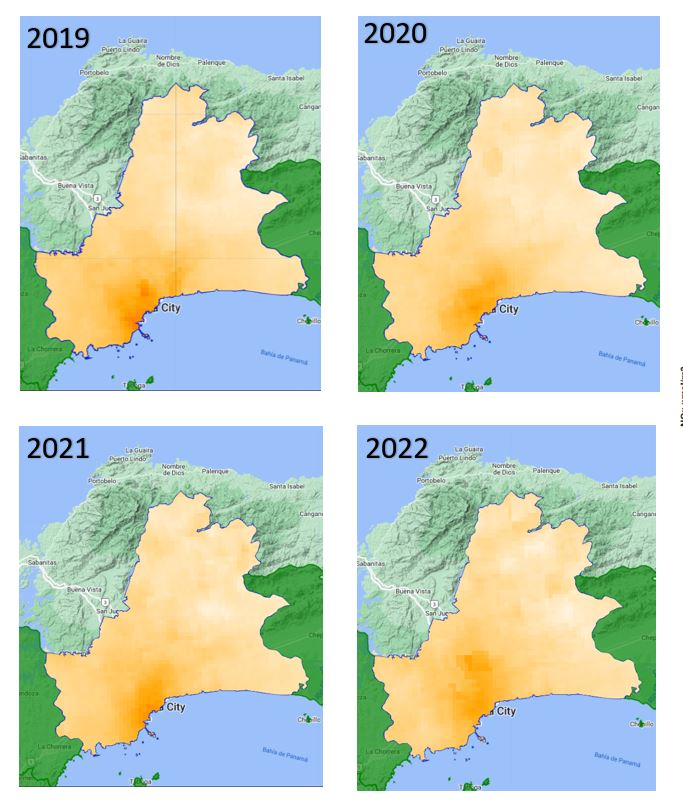
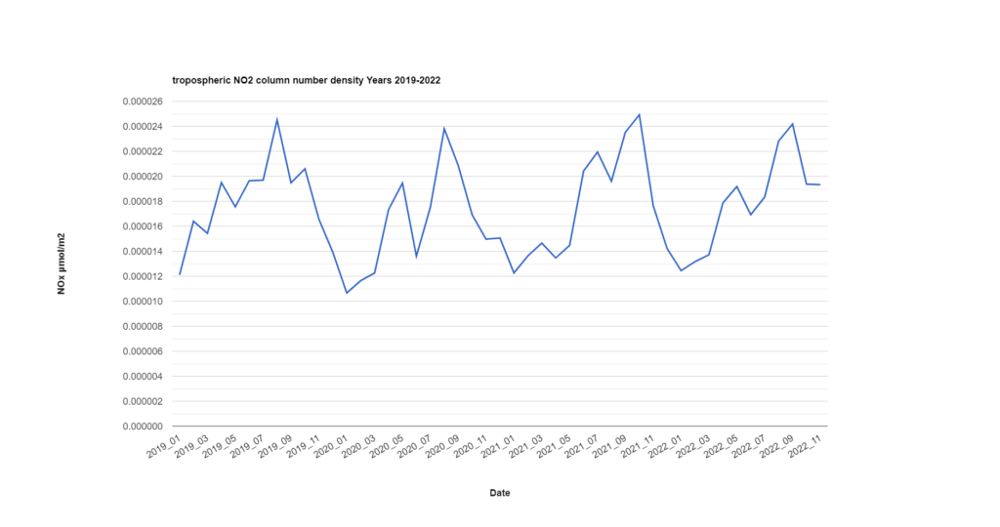

Monitoring Nitrogen Oxide Levels during the COVID 19 Lock-down, Panama City
From time to time I like new challenges in my field of work. From learning a new tool for geospatial analysis, explore a new dataset, improve my programming skills, dive deeper into the details of certain libraries, and so on.
Today I would like to present a pipeline written for the Google Earth Engine JavaScript language interface. This pipeline aims to monitor nitrogen dioxide levels (a gas that has profound repercussions on public health, and whose levels are higher in urban than in rural areas), using the Sentinel-5 image collection. For this we will restrict our analysis to Panama City, the capital of my home country.
Panama City is a city of just over 2 million inhabitants. It is an important banking and multi-modal transportation center thanks to the Panama Canal, which allows the transport of containers and ships transiting from the Atlantic to the Pacific Ocean and vice versa, an important global shipping network.
However, people's lives during the COVID-19 pandemic changed dramatically when the first case was reported in early March 2020. These measures, according to this Wikipedia entry, comprised partial and total lockdown.
This post is not to discuss the legitimacy, or effectiveness of these measures, but it allows us to visualize the changes in air quality, in situations as exceptional as a total quarantine, where the flow of land, air and sea traffic has been very low for some months.
Below is the code put together, which works in the Google Earth Engine code editor. Our study area is the districts of the Province of Panama: San Miguelito, Arraiján, and Panamá.
These districts concentrate the highest population density, and are where most of the infrastructure, commercial and banking centers are located. The code should be self-explanatory, I have added comments on the different steps that are taken as it runs in Google Earth Engine. The result should be annual composites of Sentinel-5P Imagery for the years 2019-2022, as well as a chart of monthly nitrogen dioxide values from January 1, 2019 to November 2022.
Code
Code
```javascript title="nitrogen_dioxide_monitoring.js" linenums="1" // Filtering Feature Collection to Area of Interest (AOI) var GAUL_country_boundaries = ee.FeatureCollection("FAO/GAUL/2015/level2"); var Panama = GAUL_country_boundaries.filter(ee.Filter.eq('ADM1_NAME', 'Panamá')); print(Panama); Map.addLayer(Panama, {color: 'green'}, 'Panama Province'); var districts = ee.List(['Arraiján', 'Panamá', 'San Miguelito']); var AOI = Panama.filter(ee.Filter.inList('ADM2_NAME', districts)); var AOI_ = AOI.union(); Map.addLayer(AOI_, {color: 'blue'}, 'Area of Interest'); // Setting the Map to the coordinates of one of our districts var centroid_coor = AOI_.geometry().centroid().coordinates().getInfo(); var x = centroid_coor[0]; var y = centroid_coor[1]; Map.setCenter(x, y, 10); // Setting visualization parameters var band_viz = { min: 0, max: 0.0002, palette: ['white', 'orange', 'red', 'cyan', 'purple', 'green'] }; // Setting the start and end date // and creating the list of month and dates var date_start = ee.Date('2020-01-01'); var date_end= ee.Date('2022-12-31'); var months = ee.List.sequence(1, 12);//separate by years var years = ee.List.sequence(date_start.advance(-1,"year") .get("year"), date_end.get("year")); // Creating the image composites (monthly time series) // of Sentinel-5P tropospheric NO2 density var year_composite = years.map(function(y){ return months.map(function(m){ return ee.ImageCollection('COPERNICUS/S5P/OFFL/L3_NO2') .select('tropospheric_NO2_column_number_density') .filter(ee.Filter.calendarRange(y, y,'year')) .filter(ee.Filter.calendarRange(m, m,'month')) .median() .set('year',y) .set('month', m) .clip(AOI_); })}); function decomposeList(l) { return ee.ImageCollection.fromImages(l).toList(12); } var list_imgs = year_composite.map(decomposeList).flatten(); // Setting as index the year and month // of the layer being created function renameImages(img){ var img_1 = ee.Image(img); var value = ee.Number(img_1.get('year')).format('%04d') .cat('_').cat(ee.Number(img_1.get('month')).format('%02d')); var img_2 = img_1.set('system:index', value, 'system:id', value); return img_2; } var list_imgs_renamed = list_imgs.map(renameImages); var img_collection = ee.ImageCollection.fromImages(list_imgs_renamed); // Create time lapse var text = require('users/gena/packages:text'); // Import gena's package which allows text overlay on image var annotations = [ {position: 'left', offset: '0.25%', margin: '0.25%', property: 'label', scale: 1000} //large scale because image if of the whole world. Use smaller scale otherwise ]; function addText(image){ var timeStamp = image.id(); var image_ = image.visualize(band_viz).set({'label':timeStamp}); // set a property called label for each image var annotated = text.annotateImage(image_, {}, AOI_.geometry(), annotations); // create a new image with the label overlayed using gena's package return annotated; } var extent = AOI_.geometry().bounds(); var buffered_extent = extent.buffer(ee.Number(10000).sqrt().divide(2), 1).bounds(); // Define GIF visualization parameters. var gifParams = { 'region': buffered_extent, 'dimensions': 600, //'crs': 'EPSG:3857', 'framesPerSecond': 1.5 }; var annotated_collection = img_collection.map(addText); // Print the GIF URL to the console. print(ui.Thumbnail(annotated_collection, gifParams)); ui.Thumbnail(annotated_collection, gifParams); // Define the chart and print it to the console. var chart = ui.Chart.image .seriesByRegion({ imageCollection: img_collection, band: 'tropospheric_NO2_column_number_density', regions: AOI_, reducer: ee.Reducer.mean(), scale: 500, seriesProperty: 'label', xProperty: 'system:id' }) .setOptions({ title: 'tropospheric NO2 column number density Years 2019-2022', hAxis: {title: 'Date', titleTextStyle: {italic: false, bold: true}, format: 'short' }, vAxis: { title: 'NOx µmol/m2', titleTextStyle: {italic: false, bold: true}, }, lineWidth: 3, }); //print(chart); print(img_collection); // Adding yearly composites var imgs_2019 = img_collection.filter(ee.Filter.eq('year', 2019)); Map.addLayer(imgs_2019.mean(), band_viz, 'S5P N02_2019'); var imgs_2020 = img_collection.filter(ee.Filter.eq('year', 2020)); Map.addLayer(imgs_2020.mean(), band_viz, 'S5P N02_2020'); var imgs_2021 = img_collection.filter(ee.Filter.eq('year', 2021)); Map.addLayer(imgs_2021.mean(), band_viz, 'S5P N02_2021'); var imgs_2022 = img_collection.filter(ee.Filter.eq('year', 2022)); Map.addLayer(imgs_2022.mean(), band_viz, 'S5P N02_2022'); ```Output
Below is an image of the annual series of sentinel-5p images. These are the per-pixel average of these images for the years 2019-2022.

Nitrogen Dioxide tropospheric column - Panama City - 2019-2022

Conclusion
As can be seen, nitrogen dioxide concentrations vary from month to month. The dry season months (January to March, which are characterized by an increase in air velocity), have lower nitrogen dioxide concentrations than the rainy season months (April to December). In the year 2020 we see that the lowest and the highest nitrogen dioxide concentration were smaller compared to the previous and next year peak values. This may be attributed to lower vehicular traffic and population mobilization due to restrictions on citizenship to prevent the spread of the corona virus. During these months in some parts of the world a change in air quality could be evidenced. This was much more palpable in areas such as in China, where a similar analysis was made, yielding interesting results.
It was very interesting to see how the environment has the resilience to regenerate itself from anthropocentric activities. In some latitudes of our planet, some wild animals started to be sighted in areas of high human disturbance, oceans started to regenerate as maritime traffic decreased, and people were able to have a better view of the surroundings of cities that are usually full of smog.
The bad news is that all of this was made possible by strict restrictions due to a pandemic of global proportions, which paralyzed or affected our daily activities, and not by governmental interest or initiative to protect the environment in which we live.
The good thing is that it makes us think about our place on this planet, and what we can do to make it a better place to live, both for ourselves and for other living things.
Maybe that purchase or trip we want to make is not so important after all?